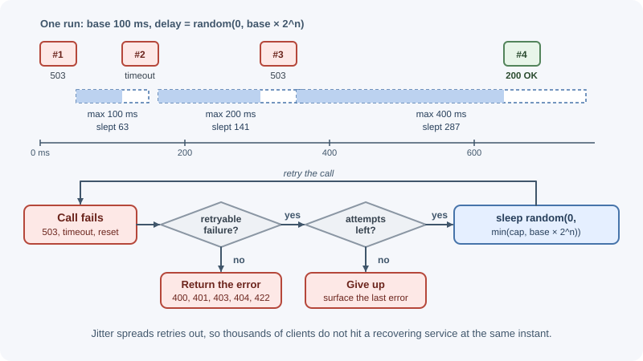
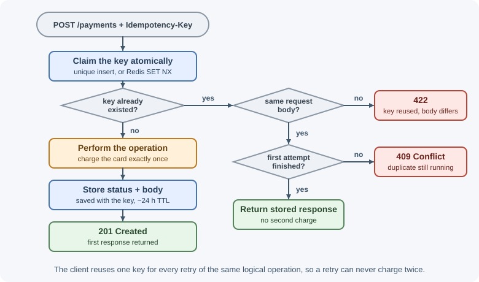
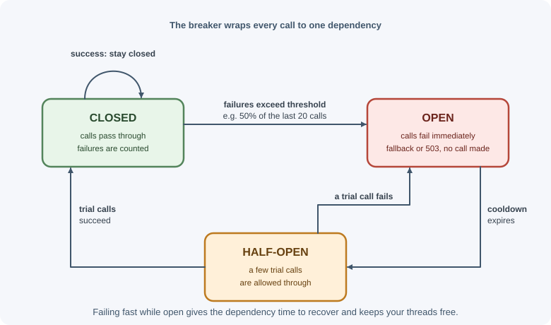

Timeouts, Retries, and Idempotency¶
Every call a backend makes to another system — a database, a payment provider, another microservice — can be slow, fail, or fail halfway. Timeouts bound how long you wait, retries give transient failures a second chance, and idempotency makes it safe to repeat an operation without doing it twice. These three ideas, plus circuit breakers and bulkheads, are the core toolkit for building reliable distributed systems.
Why it matters¶
Consider a checkout request that calls a payment API. The call times out. Did the card get charged? You do not know: the request may have been lost on the way, or the charge succeeded and the response was lost on the way back.
- If you do not retry, a temporary network glitch fails a customer's order.
- If you retry blindly, you may charge the customer twice.
- If you never time out, one slow dependency ties up your server's connections and threads until the whole service stops responding.
Getting this right is the difference between a system that rides out everyday failures and one where every small outage cascades.
Real-world usage¶
- Stripe's
Idempotency-Keyheader. Clients send a unique key (Stripe suggests V4 UUIDs, up to 255 characters) so retries of a request are recognized. Stripe compares the parameters of a repeated request with the original and returns an error if they differ, and may prune keys once they are at least 24 hours old (Stripe API: idempotent requests). - The IETF Idempotency-Key draft standardizes the header: a retry that
arrives while the original is still processing should get
409, and reusing a key with a different payload should get422(IETF draft: The Idempotency-Key HTTP header field). - AWS SDKs. In standard retry mode the SDKs retry with exponential backoff and jitter and keep a "retry quota" — a token bucket that stops retries when too many requests are failing, which is a retry budget (AWS SDKs and Tools: retry behavior). Amazon explains the reasoning in Timeouts, retries, and backoff with jitter.
- Circuit breakers at Netflix. Netflix's Hystrix library was built to isolate calls to remote systems and stop cascading failures. It is now in maintenance mode, and Netflix says it uses projects such as resilience4j for new internal work (Netflix Hystrix on GitHub).
Popular tools: resilience4j (Java), Polly (.NET), opossum and
cockatiel (Node.js circuit breakers and retry policies), and service meshes
such as Envoy and Istio, which add retries, timeouts, and outlier detection
outside the application code.
How it works¶
Why calls between services fail¶
- Network problems: packet loss, connection resets, DNS failures.
- The remote service is overloaded, restarting, or being deployed.
- Rate limits (
429). - Slow queries or garbage collection pauses causing timeouts.
- Bugs and bad data causing errors.
A remote call has three possible outcomes, not two: success, failure, and unknown (timeout or lost response). Reliable designs handle the unknown case explicitly.
Timeouts¶
A timeout is the maximum time you are willing to wait. Without one, a request can hang indefinitely while holding resources (a socket, memory, a database connection, a user waiting).
| Timeout type | What it bounds |
|---|---|
| Connect timeout | Establishing the TCP (and TLS) connection |
| Read / response timeout | Waiting for data after the request is sent |
| Idle timeout | Time with no activity on an open connection |
| Total (deadline) timeout | The whole operation, including retries |
Guidelines:
- Always set timeouts on outbound HTTP calls, database queries, and queue operations. Many clients default to no timeout or a very long one.
- Base values on the dependency's normal latency (for example, a little above its p99), not on a guess like 30 seconds.
- Propagate deadlines: if the incoming request must finish within 2 seconds, downstream calls should not each be allowed 5 seconds. Pass the remaining time budget along.
- A timeout means "outcome unknown," not "operation failed." The remote side may still complete the work.
In Node.js, the built-in fetch supports cancellation through an
AbortSignal; AbortSignal.timeout(ms) creates one that aborts
automatically.
Which failures to retry¶
| Retry | Do not retry |
|---|---|
| Network errors (connection reset, refused, DNS temporary failure) | 400 Bad Request, 422 — the request is wrong |
| Timeouts (if the operation is idempotent) | 401, 403 — credentials or permissions will not change |
502 Bad Gateway, 503 Service Unavailable, 504 Gateway Timeout |
404 Not Found, 409 Conflict (usually) |
429 Too Many Requests — after the Retry-After delay |
501 Not Implemented |
| Database deadlocks and serialization failures | Errors caused by bugs in your own code |
500 is ambiguous: retry at most once or twice, because it often indicates a
bug that will repeat.
Only retry operations that are safe to repeat — idempotent ones, or ones protected by an idempotency key (see below).
Exponential backoff with jitter¶
Retrying immediately, at fixed intervals, hammers a struggling service at exactly the moment it needs relief. Exponential backoff increases the delay after each attempt:
delay = min(maxDelay, baseDelay × 2^attempt)
base = 100 ms → 100, 200, 400, 800, 1600 ms ... capped at maxDelay
If thousands of clients failed at the same moment, they would all retry at the same moments too, creating synchronized waves. Jitter adds randomness to spread them out. A common choice is "full jitter":
delay = random(0, min(maxDelay, baseDelay × 2^attempt))
Also limit the number of attempts (for example, 3–5) and the total time.

Retry storms and retry budgets¶
Retries multiply load. If each of three layers retries 3 times, one failing request at the bottom can become 3 × 3 × 3 = 27 attempts. During an outage, retries can keep a recovering service down.
Defenses:
- Retry at one layer only (usually closest to the failure, or at the edge), not at every layer.
- Use a retry budget: allow retries only while they are a small fraction (for example, 10%) of total requests.
- Combine retries with a circuit breaker that stops calling a dependency that is clearly down.
- Honor
Retry-Afterfrom the server.
Idempotency¶
An operation is idempotent if doing it once or many times has the same effect on the server's state.
| Method | Safe (no state change) | Idempotent |
|---|---|---|
GET, HEAD, OPTIONS |
Yes | Yes |
PUT (replace resource with this) |
No | Yes |
DELETE |
No | Yes (second delete changes nothing; may return 404) |
POST (create, charge, send) |
No | No |
PATCH |
No | Depends on the patch (set x = 5 yes, x += 1 no) |
See HTTP methods. Idempotency is about the effect, not
the response: a repeated DELETE may return 404 instead of 204, and
that is fine.
Idempotency keys for POST¶
To make a non-idempotent operation safe to retry, the client generates a
unique key (such as a UUID) for each logical operation and sends it with
every attempt, commonly in an Idempotency-Key header (used by Stripe and
others, and described in an IETF draft).
POST /payments
Idempotency-Key: 6f1d4a2e-9b3c-4f8e-a1d7-2c5e8b0f9a13
{ "orderId": "812", "amount": 4999 }
Server behavior:
- Look up the key (scoped to the client or account).
- Not seen before: record the key as "in progress," perform the operation, store the response (status and body) with the key, return it.
- Seen and completed: return the stored response without performing the operation again.
- Seen and still in progress (a concurrent duplicate): return
409 Conflict(or wait), so the operation does not run twice in parallel. - Same key, different request body: reject with an error
(
422), because the client is misusing the key. - Expire keys after a reasonable period (for example, 24 hours).

The "record as in progress" step must be atomic — for example, an insert
into a table with a unique constraint on the key, or Redis SET key value NX
— so two concurrent attempts cannot both start. See
concurrency and race conditions.
Circuit breaker¶
A circuit breaker wraps calls to a dependency and stops calling it when it is clearly failing, giving it time to recover and making your service fail fast instead of waiting on timeouts.

- Closed: normal operation; failures are counted.
- Open: after too many failures (for example, 50% of the last 20 calls), calls fail immediately without touching the dependency.
- Half-open: after a cooldown, a few trial calls are allowed. Success closes the circuit; failure opens it again.
Bulkheads¶
Named after ship compartments that stop one leak from sinking the whole ship: isolate resources per dependency so one slow dependency cannot exhaust everything. Examples: a separate connection pool or concurrency limit for the reporting database, a maximum number of in-flight calls to the recommendations service, separate worker pools for slow and fast jobs.
Fallbacks¶
When a call fails or the circuit is open, a fallback may still give the user something useful: cached data, a default value, a simplified response, or a queued request to process later. Fallbacks must be honest — showing stale prices is fine for a product list, not for a payment amount.
At-least-once delivery and deduplication¶
Message queues and webhook systems usually guarantee at-least-once delivery: a message may be delivered more than once (for example, if a consumer crashes after processing but before acknowledging). "Exactly once" across systems is achieved in practice as at-least-once delivery plus idempotent processing:
- Give each message or event a unique ID.
- Record processed IDs (with a unique constraint) in the same transaction as the side effect, when possible.
- Skip messages whose IDs were already processed.
See background jobs and scheduling and message queues.
When to use and when not to use¶
Always set timeouts on outbound calls. The other tools depend on the operation and the dependency.
Retry when:
- The failure is transient (network error, 502, 503, 504, 429).
- The operation is idempotent, or protected by an idempotency key.
- There is time left in the caller's deadline.
Do not retry when:
- The error is a client error (400, 401, 403, 404, 422) or a bug.
- A user is waiting and the retry would push past an acceptable response time — fail fast and let the client decide.
- Another layer (a client SDK, a service mesh) already retries the same call.
Add a circuit breaker when a dependency is called often and can fail for minutes at a time. It adds little for rarely called dependencies, because there is not enough traffic to judge their health.
| Situation | Tool |
|---|---|
| Any network call | Timeout (per attempt plus an overall deadline) |
Occasional network blips on a GET |
Retries with backoff and jitter |
| Charging a card or sending a message | Idempotency key, then retries |
| A dependency is down for minutes | Circuit breaker plus a fallback |
| One slow dependency starves the others | Bulkhead (separate pool or concurrency limit) |
| Queue or webhook consumers | Deduplicate by message ID |
Practical examples¶
fetch with a timeout and retries with full jitter¶
const RETRYABLE_STATUS = new Set([429, 502, 503, 504]);
function sleep(ms) {
return new Promise((resolve) => setTimeout(resolve, ms));
}
function backoffDelay(attempt, baseMs = 200, maxMs = 5000) {
const exponential = Math.min(maxMs, baseMs * 2 ** attempt);
return Math.random() * exponential; // full jitter
}
export async function fetchWithRetry(url, options = {}, maxAttempts = 4) {
for (let attempt = 0; attempt < maxAttempts; attempt += 1) {
try {
const response = await fetch(url, {
...options,
signal: AbortSignal.timeout(2000), // per-attempt timeout
});
if (!RETRYABLE_STATUS.has(response.status)) {
return response; // success or a non-retryable error
}
if (attempt === maxAttempts - 1) {
return response; // out of attempts: let the caller handle it
}
// Release the connection: Node's fetch needs unread bodies cancelled
await response.body?.cancel();
// Honor Retry-After (seconds) when the server provides it
const retryAfter = Number(response.headers.get("retry-after"));
await sleep(retryAfter > 0 ? retryAfter * 1000 : backoffDelay(attempt));
} catch (error) {
// Network error or timeout (error.name === "TimeoutError")
if (attempt === maxAttempts - 1) throw error;
await sleep(backoffDelay(attempt));
}
}
}
Use this only for idempotent requests, or send an idempotency key with non-idempotent ones.
Calling a payment API with an idempotency key¶
import { randomUUID } from "node:crypto";
// One key per logical operation, reused for every retry of that operation
const idempotencyKey = randomUUID();
const response = await fetchWithRetry("https://payments.example.com/charges", {
method: "POST",
headers: {
"content-type": "application/json",
"idempotency-key": idempotencyKey,
},
body: JSON.stringify({ orderId: "812", amount: 4999 }),
});
Server-side idempotency middleware (simplified)¶
// Assumes a collection with a unique index on { accountId, key }
export function idempotent() {
return async (request, response, next) => {
const key = request.get("idempotency-key");
if (!key) return next(); // or require it for this endpoint
const scope = { accountId: request.user.id, key };
try {
// Atomic claim: fails with a duplicate-key error if the key exists
await db.idempotency.insertOne({ ...scope, status: "in_progress", createdAt: new Date() });
} catch (error) {
if (error.code !== 11000) throw error;
const existing = await db.idempotency.findOne(scope);
if (existing?.status === "completed") {
return response.status(existing.statusCode).json(existing.body);
}
return response.status(409).json({ error: "Request already in progress" });
}
// Capture the response so repeats can replay it
const originalJson = response.json.bind(response);
response.json = (body) => {
db.idempotency
.updateOne(scope, { $set: { status: "completed", statusCode: response.statusCode, body } })
.catch((error) => request.log.error({ err: error }, "idempotency save failed"));
return originalJson(body);
};
next();
};
}
A production version also compares a hash of the request body, deletes the "in progress" record if the handler fails before responding, and expires old keys with a TTL index.
Best practices¶
- Set explicit timeouts on every outbound call; propagate deadlines.
- Treat timeouts as "unknown outcome," not as definite failure.
- Retry only transient failures and only idempotent (or key-protected) operations.
- Use exponential backoff with jitter, a maximum attempt count, and a total time limit.
- Retry at one layer; use retry budgets to avoid retry storms.
- Honor
Retry-After. - Require idempotency keys for operations that move money or send messages.
- Add circuit breakers and bulkheads around critical dependencies.
- Design consumers of queues and webhooks to deduplicate by message ID.
In production¶
- A recovering dependency is knocked down again. Symptom: a service comes back after an outage and immediately falls over. Detect: requests to the dependency run at several times the incoming user traffic, and retry counters spike. Cause: retries at several layers, without jitter or a budget, all firing at once. Fix: retry at one layer, add jitter and a retry budget, and open a circuit breaker while the dependency is down.
- Customers are charged twice. Symptom: support reports duplicate
charges after a period of payment timeouts. Detect: two successful
payments for one order ID. Cause: a
POSTwas retried without an idempotency key, or a new key was generated for each attempt. Fix: generate one key per logical operation, store it with the order before the first attempt, and reuse it for every retry. - Everything slows down because one dependency hangs. Symptom: latency
climbs on all endpoints, not just the ones that call the slow dependency.
Detect: many open sockets to one host and connection-pool wait times
rising. Cause: no timeout on outbound calls — undici, which powers Node's
fetch, waits up to 300 seconds by default for response headers. Fix: set a timeout on every call, and use a bulkhead so one dependency cannot take all connections. - Work runs twice after the client gives up. Symptom: duplicate
records appear even though the client saw a timeout. Detect: server logs
show requests completing after the caller's deadline. Cause: the caller
timed out and retried, but the server kept processing the first attempt.
Fix: propagate deadlines and cancel downstream work with an
AbortSignal, and make the operation idempotent. - An idempotency key is stuck "in progress". Symptom: retries of one
operation keep getting
409long after the first attempt. Detect: idempotency records inin_progressthat are older than the longest request. Cause: the process crashed before marking the record completed. Fix: expire in-progress claims after a timeout, and clear the claim when the handler fails before responding.
Important terminology¶
- Timeout: the maximum time to wait for an operation.
- Deadline: an absolute time by which the whole operation must finish.
- Transient failure: a failure likely to succeed on retry.
- Exponential backoff: increasing delays between retries.
- Jitter: randomness added to delays to avoid synchronized retries.
- Retry storm: retries amplifying load during an outage.
- Retry budget: a cap on retries as a fraction of total traffic.
- Idempotent: having the same effect whether performed once or many times.
- Idempotency key: a client-supplied unique key that lets the server recognize repeats of one operation.
- Circuit breaker: a component that stops calls to a failing dependency.
- Bulkhead: isolating resources so one failure cannot exhaust them all.
- Fallback: an alternative response when the primary path fails.
- At-least-once delivery: a guarantee that messages arrive, possibly more than once.
Common mistakes and misconceptions¶
- No timeouts, or relying on very long defaults.
- Assuming a timeout means the operation did not happen.
- Retrying
POSTrequests without an idempotency key, causing duplicate orders or charges. - Retrying
4xxerrors that will never succeed. - Fixed-interval retries without jitter, causing thundering herds.
- Retries at every layer, multiplying load.
- Non-atomic idempotency checks that let two concurrent duplicates both run.
- "Exactly-once delivery solves it." In practice, use at-least-once delivery with idempotent processing.
Revision questions¶
- Why are there three possible outcomes of a remote call, and how does that affect retry design?
- Which HTTP status codes are generally retryable, and which are not?
- Write the formula for exponential backoff with full jitter and explain why jitter helps.
- How does an idempotency key make a
POSTsafe to retry? What must the server do with concurrent duplicates? - Describe the three states of a circuit breaker and the transitions between them.
- Why is "exactly once" usually implemented as at-least-once delivery plus deduplication?